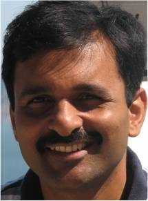

RESEARCH HIGHLIGHT · 24 SEP 2026
Indigenous programmable micro-GPU
A working graphics processor prototype implemented on an FPGA, with potential embedded uses such as low-cost displays and e-reader interfaces.


Selected recent IIT Delhi research stories, with project visuals and the researchers named by the institute. Research highlights are not necessarily patented; patent applications are listed separately below.
Research and patent examples reviewed 18 October 2026 · Featured stories, not an exhaustive list.
A working graphics processor prototype implemented on an FPGA, with potential embedded uses such as low-cost displays and e-reader interfaces.
IIT Delhi researchers demonstrated transmission of quantum-entangled photons alongside classical data over a 50-km optical-fibre link.


An IIT Delhi collaboration with AIIMS New Delhi and IHBAS adapted a music-based speech therapy for Hindi. IIT Delhi reports that the pilot involved six participants; the authors describe the results as preliminary.


These examples appear in FITT’s latest-filed IP listing. A filed application is not the same as a granted patent. The official database contains the full, changing list.
| Application | Technology | Named inventor / PI | Area |
|---|---|---|---|
| IN202511134148 | Open-cell porous lattice structure and method for producing it | Dinesh Kalyanasundaram | Biomedical engineering |
| IN202511134259 | Carbon-blend sulfur cathode for a room-temperature sodium-sulfur battery | Vipin Kumar | Energy storage |
| IN202511130824 | Anti-microbial peptide for combating multidrug-resistant ocular infection | Archana Chugh | Healthcare / life sciences |
FITT’s FY 2024–25 annual report states that 155 IP applications were filed and 28 licensing deals were signed during that financial year. Figures describe that year, not a current live total. Read the annual report.
Research at IIT Delhi has produced technologies for healthcare, secure communications, electronics, energy, robotics and materials. FITT supports IP management, licensing, industry engagement and startup incubation.

Institute research groups bring students, faculty and specialist facilities together to test ideas and develop new methods.
Innovation includes foundational discoveries, engineering prototypes, patents, licensing and new ventures. A research image or prototype does not by itself establish a commercial product or patent status.